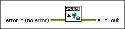

Flush Shared Variable Data VI
Owning Palette: PSP Variable VI and Functions
Requires: Base Development System (Real-Time, Windows)
Flushes the buffer of all network-published shared variables immediately. LabVIEW uses an 8 kilobyte buffer for all shared variable values, and LabVIEW automatically flushes the 8 kilobyte buffer either when the buffer fills up or after 10 ms have passed. If you write less than 8 kilobytes of data, it can take up to 10 milliseconds for LabVIEW to send that data over the network. You can use the Flush Shared Variable Data VI to flush the buffer immediately and eliminate this delay.
 Add to the block diagram Add to the block diagram |
 Find on the palette Find on the palette |